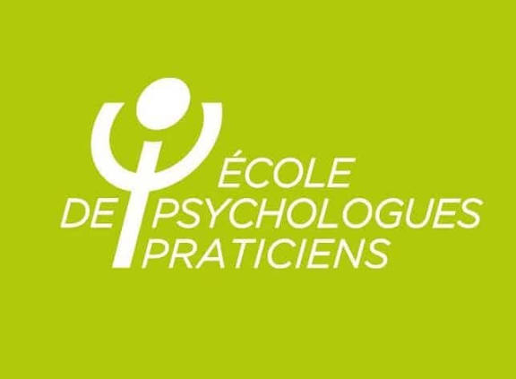
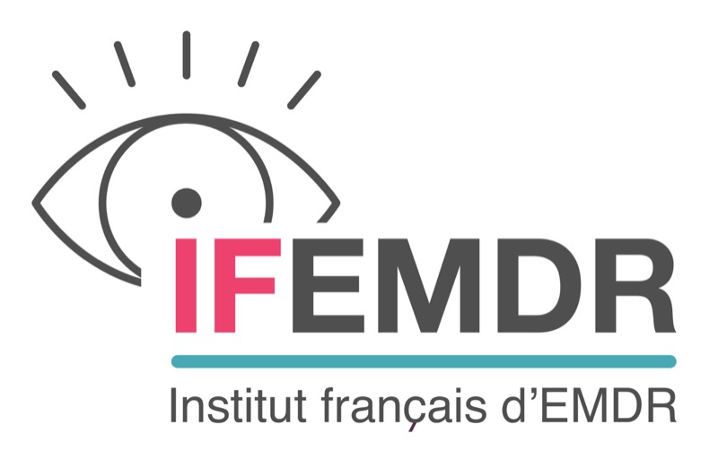
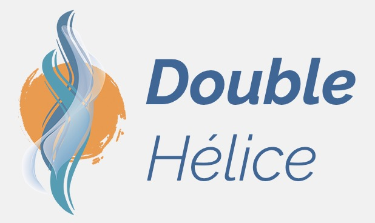

Vie scolaire & professionnelle
- Apprentissages
- Intégration
- Relationnel au travail
- Licenciement
Psychologue clinicienne — Annecy
Un espace d'écoute, de bienveillance et de confiance pour les enfants, les adolescents et les jeunes adultes.
Psychologue clinicienne, je travaille essentiellement avec des enfants, des adolescents et des jeunes adultes individuellement ou en famille.
En offrant un espace d'écoute, de bienveillance et de confiance, j'accompagne les patients dans leur développement affectif et émotionnel, dans leurs questionnements et leurs difficultés, afin de trouver leurs propres solutions, leur apprendre à mieux se connaître, à se faire confiance et à mettre en lumière les ressources et les forces dont ils disposent déjà en eux, pour prétendre à un mieux-être.
Plus spécifiquement spécialisée en psychotraumatisme et neuropsychologie et en m'appuyant sur d'autres techniques complémentaires, je construis avec mes patients l'accompagnement adapté à leur problématique, à leurs besoins et à leurs objectifs.
Une formation initiale de psychologue clinicienne, complétée par des formations spécialisées.

Diplôme de psychologue clinicienne, conférant le titre de psychologue reconnu par l'État.

Formation à la thérapie EMDR, dédiée au traitement des psychotraumatismes.

Formation à l'Intégration du Cycle de Vie (ICV).
Vos difficultés recouvrent une palette variée. Elles peuvent être en lien, par exemple, avec :
Ces difficultés peuvent être source, notamment, de :
N'hésitez pas à me contacter pour un premier échange.